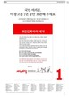
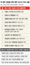

당신이 좋아할 만한 기사
* 빅데이터를 분석해 추천합니다

“옛 새누리당 의원들, 1년 전 ‘세비 반납’ 약속 지킬 거죠?”
슈퍼우먼방지법·청년주거수당…‘아깝다, 이 공약!’
사생활 보호와 알 권리, 무엇이 우선일까요
[단독] 일자리위, 비정규직 많은 대기업에 ‘부담금 부과’ 추진
이낙연 “해군이 청구한 강정마을 구상권 철회 추진”
[단독]임금 불평등 지표, 대통령 집무실에 설치된다
후쿠시마 원전 폭발 ‘죽음의 재’ 세슘 유출

[단독] 전교조 합법화 등 ‘10대 촛불과제’ 적시...보고서 일부 실행중
‘한지 나라’ 원주한지문화제 개막
[단독] 공공부문 임금체계 성과연봉제 대신 ‘직무급제’로
Powered by
Dable